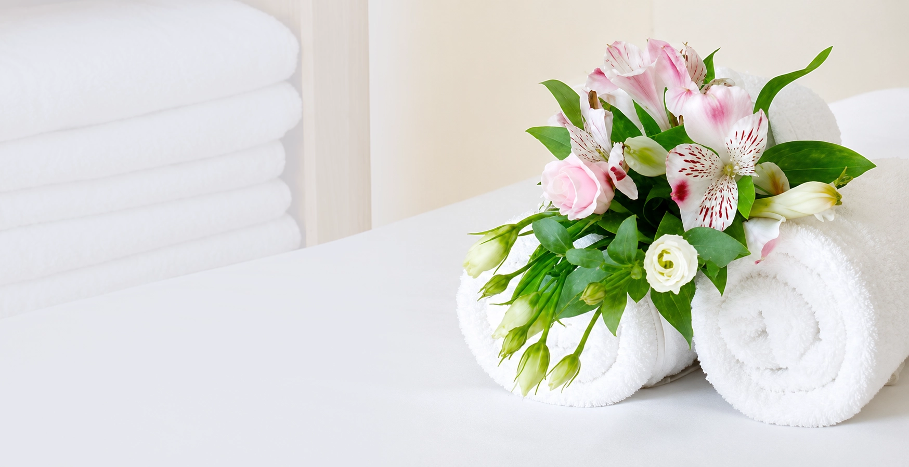
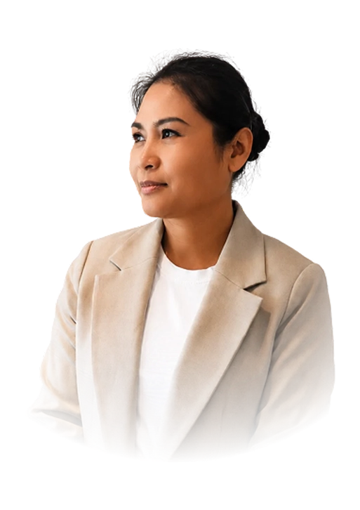

Authentiek
Traditionele Thaise massagetechnieken met respect voor eeuwenoude wijsheid.

Over Sukanya
Welkom bij Sukanya Oosterse Massage Techniek. Gun jezelf een moment van rust. Ik help je graag om lichamelijke en mentale spanning los te laten, zodat je je weer energiek, ontspannen en in balans voelt.
Geboren en getogen in Thailand, waar traditionele massage al generaties lang deel uitmaakt van het dagelijks leven.
Na mijn opleiding en jarenlange ervaring in Thaise spa’s breng ik sinds 2010 authentieke Thaise massagetechnieken naar Nederland. Elke behandeling is persoonlijk afgestemd om spanning los te laten en lichaam en geest weer in balans te brengen.

Gediplomeerd Thais massagetherapeut

Traditionele Thaise massagetechnieken met respect voor eeuwenoude wijsheid.
Elke behandeling wordt afgestemd op jouw wensen en behoeften.
Een ontspannen omgeving voor lichaam, geest en ziel.
Professionele behandeling met oprechte aandacht.
Gun jezelf rust, herstel en nieuwe energie.